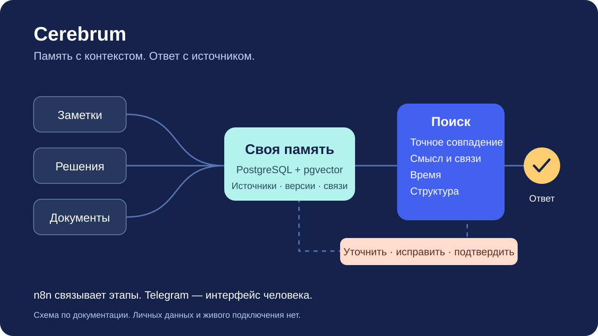

Cerebrum
Личная память для человека и его ИИ-агентов
Рассмотреть проект

Схема архитектуры Cerebrum. Обезличенная иллюстрация, не экран бота.
Задача
Сохранять знания, документы и решения так, чтобы к ним можно было вернуться с вопросом, увидеть основание ответа и уточнить изменившийся факт.
Что сделано
Собственный слой памяти на PostgreSQL и pgvector, сценарии n8n и Telegram-интерфейс. Знания превращаются в структурированные записи; поиск объединяет точные совпадения, смысл, связи, время и структуру документов. Ответ связан с исходными записями, а правки и спорные факты остаются под контролем человека.
Мой вклад
Мой проект: идея, проектирование логики и пользовательских сценариев, постановка задач ИИ-агентам и приёмка результата. Скрипты и SQL разрабатываются с помощью агентов.
Результат
В проекте собран и документирован сквозной цикл: приём знаний → обработка → память и граф → поиск → ответ. Развиваю его как собственную систему и практическую основу для обучения и автоматизации.
Собственный развиваемый проект. Ниже — архитектура и документированные сценарии; примеры вымышлены.
Что делает Cerebrum особенным
Сочетание памяти, поиска и контроля в одной системе.
Память, которая помогает найти ответ
- Знания отдельно от диалога
Заметки, решения, документы и события хранятся как объекты знаний в собственной базе. Контекст можно развивать независимо от одного чата или выбранной модели.
- Разные форматы — одна память
В архитектуре предусмотрены обработчики текста, PDF/DOCX, изображений, аудио и видео. Они приводят входные данные к объектам знаний. Голосовой сценарий сейчас дорабатывается отдельно.
- Пять способов поиска вместе
Точные совпадения, векторный поиск, граф связей, время и структура документа дополняют друг друга. Номер, смысл вопроса и связь с проектом требуют разных способов поиска.
- Два режима работы с контекстом
Можно искать по всей памяти или сосредоточиться на одном документе. Структурный индекс помогает находить нужный раздел, а не только похожий фрагмент текста.
- От ответа — к исходной записи
Источники под ответом открываются в карточках Telegram. Видны содержание, связи и история — есть возможность проверить основание и перейти к исправлению.
- Вопросы о недостающем
Question Engine находит пробелы и предлагает уточнение с объяснением «почему спрашиваю». Пользователь может ответить, отклонить вопрос или отметить, что уже сообщал это.
Знания остаются под вашим контролем
- Происхождение и доверие
Архитектура различает слова человека, документы, выводы модели и внешние сведения. Для знаний предусмотрены происхождение, доверие, уверенность и важность.
- Правка с историей и откатом
Запись можно открыть, изменить и увидеть «было → стало». История помогает отличать ошибку в данных от нового факта, пришедшего на смену прежнему.
- Расхождение — повод спросить
Если записи дают несовместимые значения, предусмотрен диалог разбора. Машина показывает расхождение, а человек определяет, что означает конфликт.
- Раздельная память пользователей
В многопользовательском контуре чтение, запись, сущности и фоновые сводки привязаны к владельцу. Изоляция учитывается в логике поиска и обработки.
- Внешние знания по решению человека
Если собственной памяти недостаточно, можно предложить внешний поиск. Сохранение результата подтверждается отдельно, а внешнее происхождение отмечается.
Инженерная сторона системы
- Очередь вместо долгого ожидания
Обработка документов, эмбеддинги и события разделены. Для отложенных действий контекст хранится в базе, а атомарный захват события защищает от повторной обработки кнопки.
- Рефлексия и утренний фокус
Фоновый контур пересчитывает важность, строит ассоциации и собирает снимок тем пользователя. Это обработка накопленной памяти, а не обучение новой языковой модели.
- Sentinel и управляемые изменения
Наблюдение отделено от исправления. Находка проходит через разбор, предложение, проверку и решение владельца; применение и результат фиксируются в журнале.
- Качество проверяется на запросах
Телеметрия показывает, как сработал поиск. Изменения можно проверять повторным прогоном сохранённых запросов, а не принимать только потому, что ответ выглядит убедительно.
- Восстановление как отдельный сценарий
Для базы памяти описаны резервирование и проведённые репетиции восстановления. Возврат данных рассматривается как отдельная проверяемая задача сопровождения.
Посмотрите на примерах
Вымышленные учебные сценарии. Это описание поведения, без обращения к ИИ и личной памяти.
Найти основание решения
Вопрос или новая записьПочему для учебного проекта выбрали PostgreSQL?
Логика сценарияВ учебной записи зафиксировано: нужны транзакции и векторный поиск. Ответ ссылается на карточку решения, которую можно открыть.
Проверяемый ответ вместо потерянного контекста переписки.
Обнаружить пробел
Вопрос или новая записьКакой бюджет согласовали на сервер?
Логика сценарияВ этом вымышленном наборе записей бюджета нет. Следующий шаг — уточнить сумму у человека, а не придумать её.
Отсутствие знания становится понятным следующим действием.
Сохранить смысл изменения
Вопрос или новая записьДля практики теперь нужен другой сервер.
Логика сценарияУточняем: старое решение было ошибкой или условия действительно изменились? История сохраняется, а актуальное решение отмечается отдельно.
Обновление памяти с объяснением, что именно изменилось.
Развиваю более глубокие связи между знаниями и доказательную историю их изменений. Эти направления отделены от реализованного базового цикла.
Как построить память помощника, подобрать способ поиска, задать агентам правила работы с данными и проверить ответ по источникам. На занятии выбираем один согласованный сценарий.